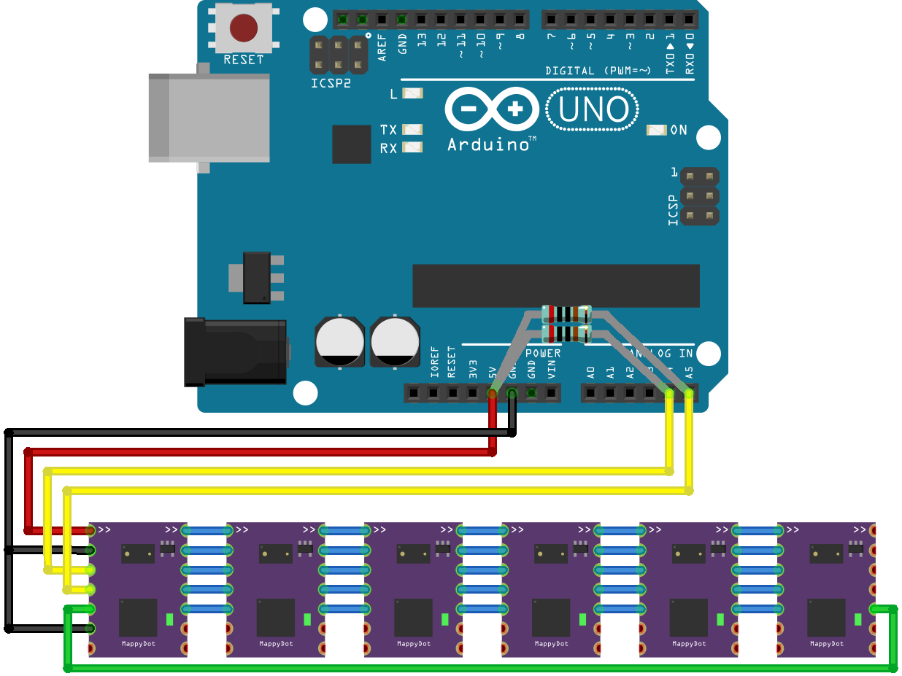
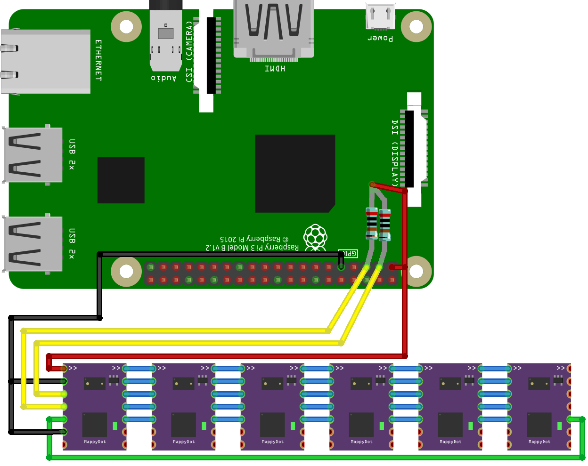

Getting Started
This guide shows how to get the SensorDots up and running on a Raspberry Pi or Arduino. They will work on a multitude of other devices, but you may need to adapt this guide accordingly.
Power
It is recommended to run the SensorDots from an external supply if you are using a lot of boards, rather than the onboard 3.3V supply on these devices (unless you are using the 5V USB voltage on Arduino and Raspberry Pi). If you want to use the onboard 3.3v supply, it's best to not connect more than 4 SensorDots to this, so it doesn't overload the power supply on Raspberry Pi or Arduino.
To maximise power efficiency when connecting to an external supply, you should connect up to a 3.3V switchmode supply to reduce current draw. While the SensorDots work at 5 volts without issues, some of this power will be wasted as heat and can lead to shorter battery run times. Using a drop in 3.3V switchmode regulator module such as the Recom Power R-783.3-0.5 or XP Power TR05S3V3 can make for a cheap and power efficient setup if running from a 5V supply. This regulator will also help protect your devices if your supply is noisy with high voltage spikes. Some cheaper USB power supplies can output large voltage spikes due to poor design and will damage your devices over time.
Out of the box, once you remove any protective film on the sensors, the SensorDots will perform a basic operation when you power it up for the first time (even if you don't connect it to anything). For example, the MappyDot will output a PWM brightness level to the LED depending on how far away an object is, up to 30cm. It will increase in brightness the closer you get.
Connect the SensorDots to Your I2C Interface
Note: the green connection is optional (to enable crosstalk reduction).
Be careful when connecting the boards on a breadboard. The lower two sets of pins (unconnected in the images below except on the master) on each side of the device can interfere with one and other and prevent the SensorDots from booting. This is because the reset pin is adjacent to the ground pin at the bottom, and the programmable output pin is adjacent to the master set pin.
Don't forget pullups on the I2C lines to ensure correct operation. Only one set of resistors is required for an I2C bus (check to see that your development board doesn't include them already on the board). Resistors sizes for the I2C pullups can vary, however typically for 100kHz operation you could use 4.7k-10k and for 400kHz a value between 3.2k-4.7k can be used for voltages between 3.3V and 5V.
Please Note: The first MappyDot in the chain (or if you are using one MappyDot) requires the MST pin to be connected to ground or the MST pad shorted (unless you are wanting to use a different addressing scheme), which will assign this MappyDot as the master. The master will get an address of 0x08 and any subsequent devices in the chain will increment from this address.
If breadboarding, it is recommended to just solder 2.54mm pins to the top 5 pins (VCC, GND, 2xI2C and ADDR) so you can string them together without any extra wires on the parallel breadboard connections.
Arduino
Raspberry Pi
Note that the Raspi pins are 3.3V tolerant, so VCC MUST be 3.3V!
In the Raspberry Pi, make sure to enable the i2c interface using the raspi-config command (under Interfacing Options>I2C), then reboot the Pi. You should now have a /dev/i2c-1 device available.
Test the Connection
One you have powered the host board and SensorDot boards, you can now test they are working. Please note that the number of devices that show up will depend on your setup.
On the Arduino, you can run the I2C Scanner sketch - https://playground.arduino.cc/Main/I2cScanner
I2C Scanner Scanning... I2C device found at address 0x08 ! I2C device found at address 0x09 ! I2C device found at address 0x0a ! I2C device found at address 0x0b ! I2C device found at address 0x0c ! I2C device found at address 0x0d ! I2C device found at address 0x0e ! I2C device found at address 0x0f ! done
On Raspberry Pi, if you run the i2cdetect (sudo apt-get install i2c-tools) command to see all the currently connected and auto-addressed SensorDots:
pi@raspberrypi:~ $ i2cdetect 1
WARNING! This program can confuse your I2C bus, cause data loss and worse!
I will probe file /dev/i2c-1.
I will probe address range 0x03-0x77.
Continue? [Y/n] y
0 1 2 3 4 5 6 7 8 9 a b c d e f
00: -- -- -- -- -- 08 09 0a 0b 0c 0d 0e 0f
10: -- -- -- -- -- -- -- -- -- -- -- -- -- -- -- --
20: -- -- -- -- -- -- -- -- -- -- -- -- -- -- -- --
30: -- -- -- -- -- -- -- -- -- -- -- -- -- -- -- --
40: -- -- -- -- -- -- -- -- -- -- -- -- -- -- -- --
50: -- -- -- -- -- -- -- -- -- -- -- -- -- -- -- --
60: -- -- -- -- -- -- -- -- -- -- -- -- -- -- -- --
70: -- -- -- -- -- -- -- --If you have trouble, you may need to change the bus speed, especially if you are running long bus lines. On the Raspberry Pi, you can change the bus speed with the following command:
sudo modprobe -r i2c_bcm2708 sudo modprobe i2c_bcm2708 baudrate=100000
To make it permanent, add the following line to the /boot/config.txt file (replace 100000 with the bit rate you wish to use):
dtparam=i2c_arm_baudrate=100000
You can also quickly test read the distance on a Raspberry Pi using:
i2cget -y 1 0x08 0x72 w
Please note that the output from this command is little endian, so you will have to reorder the bytes (e.g. 0x2c01 from the command will be 0x12c).
Done!
You're now ready to start using the SensorDots. Check out the registers reference page for details on I2C Registers you can send to each device.